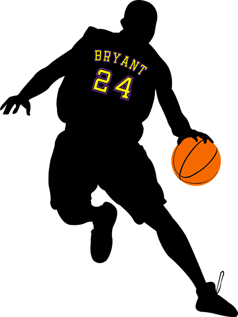

|  |
Home |
Títulos e Recordes |
Curiosidades
|
Recordes de Kobe Bryant
- Estreou na NBA com dezoito anos e 72 dias de idade, sendo um dos mais jovens nesse aspecto.
- Jogador mais jovem a jogar um All-Star Game com 19 anos e 169 dias.
- Fez oitenta e um pontos no jogo contra o Toronto Raptors, no dia 22 de janeiro de 2006.
Segunda maior pontuação feita por um jogador em um jogo na história da NBA.
- Tem o quarto recorde da NBA de bolas de três em um único jogo:
doze (superado por Stephen Curry, Klay Thompson e Zach LaVine).
- Tornou-se o jogador com mais pontos na história do Lakers, superando Jerry West.
- Jogador com mais temporadas jogadas por um único time na NBA: 20. (Superado por Dirk Nowitzki, com 21)
- Quarto maior cestinha da NBA.
- Único jogador da NBA com mais de 30.000 pontos e 6.000 assistências (superado por LeBron James).
|
Títulos Coletivos de Kobe Bryant
- 5x Campeão da NBA (2000, 2001, 2002, 2009 e 2010)
- 18x NBA All-Star Game (1998, 2000, 2001, 2002, 2003, 2004, 2005, 2006, 2007, 2008, 2009,
2010, 2011, 2012, 2013, 2014, 2015 e 2016)
- Medalha de Ouro nos Jogos Olímpicos (2008 e 2012)
- Medalha de Ouro na FIBA Americans Championship (2007)
|
Títulos Individuais de Kobe Bryant
- 2x NBA Finals Most Valuable Player (MVP das Finais) (2009 e 2010)
- NBA Most Valuable Player (MVP) (2008)
- 2x NBA Scoring Champion (2006 e 2007)
- 4x NBA All-Star Game MVP (2002, 2007, 2009 e 2011)
- 15x All-NBA Team:
Primeiro Time: 2002, 2003, 2004, 2006, 2007, 2008, 2009, 2010, 2011, 2012 e 2013
Segundo Time: 2000 e 2001
Terceiro Time: 1999 e 2005
- 12x NBA All-Defensive Team:
Primeiro Time: 2000, 2003, 2004, 2006, 2007, 2008, 2009, 2010 e 2011
Segundo Time: 2001, 2002 e 2012
- NBA All-Rookie Team Segundo Time: 1997
- NBA Slam Dunk Contest Champion: 1997
|